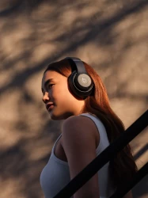
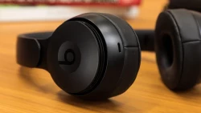
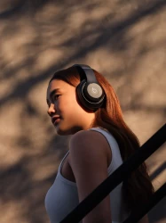
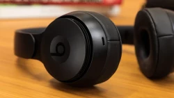

Beats Pro
 




Prepare to elevate your auditory journey with Beats headphones. These aren't just headphones; they're a fusion of style and sound that'll immerse you in a world of musical bliss and urban chic.
üì¢ Specifications:
- üé∂Immerse in Sonic Brilliance:
- Dive deep into a world of music, movies, and conversations with Beats Headphones' unparalleled sound quality. Each note, rhythm, and word comes to life with remarkable precision, enveloping you in a mesmerizing auditory experience.
- üîãAll-Day Comfort and Durability:
- Engineered for extended listening sessions, Beats Headphones feature plush ear cushions and a tailored fit that ensures hours of listening pleasure without discomfort. The robust build ensures these headphones can withstand your active lifestyle.
- üîáAdaptive Noise Isolation:
- Choose between shutting out the world üåç or staying aware of your surroundings with adaptive noise isolation technology that adapts to your environment, delivering the peace and focus you desire.
- üé©Urban Elegance:
- With meticulous craftsmanship and an urban-edge design, Beats Headphones make a bold fashion statement while providing top-tier audio performance. Elevate your style and sound with these headphones that exude elegance and sophistication.
- üåêSeamless Connectivity:
- Effortlessly switch between your devices, whether it's your smartphone üì±, tablet
Price: 299,99